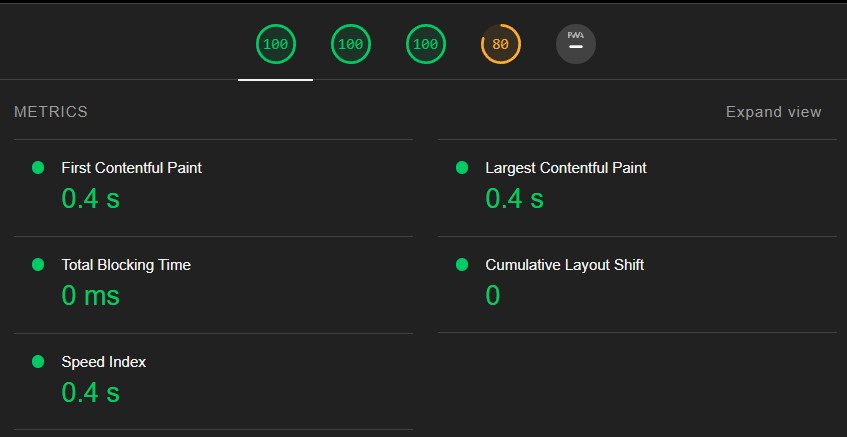

Accessibility
The accessibility of the site
The font
We decided to use Arial as the only font for the entire site conciously. According to w3schools, it is "one of the safest web fonts," and "available on all major operating systems."
For the sake of having some variety however, we did alter the size and decoration of the text some places (i.e. bold, underline, font weight.)
The colors
We went for this color scheme before we saw the message in Canvas... our bad. We could have chosen to change it, but decided against it as we have grown fond of the color scheme. Orange does not typically cause an issue with red-green color blindness (at least not isolated, perhaps if there are green elements nearby). We looked at this site to gain some understanding on this topic.
White background and black text tends to be the default for a lot of websites, which is part of the reason why we stuck to it. There is the benefit of contrasts between background and text as well, as it makes it easy to read. These colors feel clear, making the page easy on the eyes and not too busy or cluttered.
Hyperlinks
We kept the hyperlinks blue, but also added some styling that communicates clearly when a user hovers over a link. Both the color of the text and the text background change when the user does this.
Sizing/responsiveness
Our site uses both grid and flex in order to make it somewhat responsive. When the web browser window with changes, the layout changes. For instance, the different columns stack on top of each other should the window width become small by using media queries (see comments in the style.css file, towards the bottom). For larger windows, we decided to move the content closer to the middle of the page (as well as limit the max width) in an attempt to reduce the amount of head turning needed.
Other things to note
We used the language attribute on the html tag to declare the language of the page.
Testing - Lighthouse
The test of the page "index.html" of this site revealed no obvious issues. The text above details steps that were taken prior to this test, and it seems that at least some of the decisions we made contributed to the page not immediately standing out negatively in an automated test.